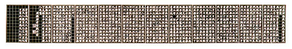
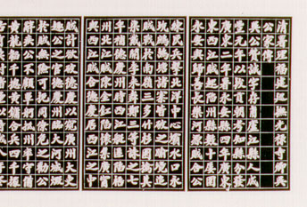

義助慰安婦
—— 李敖百件珍藏義賣藝術品（第81件）
品 名： H11. 台灣史家傳（吳光祿家傳） 預估價： 40 萬 成交價： 40 萬 說 明： 現在流行台灣本土文化、本土歷史，幾千年前最早來台灣的原住民沒有文字，所以幾千年沒有歷史流傳下來；到清朝人統治台灣時史料稍多，但僅限於官方文書及到過台灣的官吏所寫的文集，這些資料大部分收集在台灣銀行出版的《台灣文獻叢刊》裡，但並不完整，有的在李敖手裡。這一件是大家都沒看過的重要文件而且是一件藝術品。
家傳是人死後為家裡立傳，此件的特色是吳光祿之女吳學芳，請有名的書法家鄭孝胥寫的，書法雄渾有力。鄭孝胥是清朝舉人，終於清朝，曾追隨末代皇帝至東北滿洲國，官至國務總理；雖為漢奸，但卻是民國以來最好的書法家之一。由這原件中，可看出漢族如何與原住民打交道；換句話說，可以窺知早年漢族如何欺負原住民，是一個歷史的記錄。
 細部放大：
